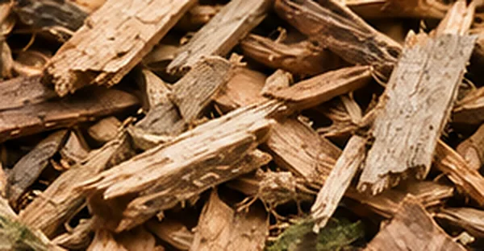

Serpih kayu di pembangkit
Pelet dan serpih kayu dibuat dari sisa penebangan atau industri kayu, lalu dibakar di pembangkit untuk menghasilkan panas, listrik, atau keduanya. Pembakarannya terjadi di pembangkit, bukan di dapur. IEA Bioenergy menyebut ini bioenergi modern dan memisahkannya dari tungku kayu yang boros dan berpolusi.
Gambar: ilustrasi buatan AI. Sumber angka: IEA Bioenergy.